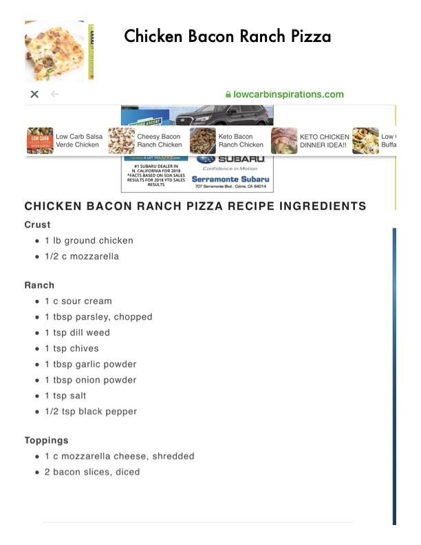

Chicken Bacon Ranch Pizza

Original cookbook page 5
A low carb chicken bacon ranch pizza with a ground chicken crust, homemade ranch topping, mozzarella cheese, and bacon. Keto-friendly pizza alternative with crispy chicken crust.
Prep: 15 minutes • Cook: 35-40 minutes • Total: 55 minutes
Ingredients
- FOR CHICKEN CRUST:
- 1 lb ground chicken
- 1/2 cup mozzarella cheese
- FOR RANCH TOPPING:
- 1 cup sour cream
- 1 tablespoon fresh parsley, chopped
- 1 teaspoon dill weed
- 1 teaspoon chives
- 1 tablespoon garlic powder
- 1 tablespoon onion powder
- 1 teaspoon salt
- 1/2 teaspoon black pepper
- FOR TOPPINGS:
- 1 cup mozzarella cheese, shredded
- 2 bacon slices, diced
- Parchment paper for rolling
Instructions
- Preheat oven to 375°F.
- In a large bowl, mix together ground chicken and 1/2 cup mozzarella. Form into a ball.
- Place parchment paper on flat surface and place your crust. Place another sheet of parchment on top and roll out into round circle, about 1/2 inch thick.
- Place crust on parchment on baking tray and bake 20-25 minutes, until brown and loses moisture.
- While crust cooks, make ranch by whisking together sour cream, parsley, dill weed, chives, garlic powder, onion powder, salt, and pepper. Also brown the bacon.
- Remove crust from oven and place 2 tablespoons ranch in center, spreading with spoon to create circle, leaving 1/2-3/4 inch for crust.
- Place 1 cup mozzarella cheese on top of ranch, then add browned bacon.
- Bake another 10-15 minutes until cheese melted.
- Broil 1-2 minutes until crust browned and cheese golden brown.
- Remove from oven and slice. Serve hot.
📝 Recipe Notes
Use parchment paper for easy rolling and handling of the chicken crust. The crust needs to cook first to remove moisture before adding toppings. Can be frozen after baking for meal prep. Combined recipe from pages 5-6.
Recipe #5 from collection